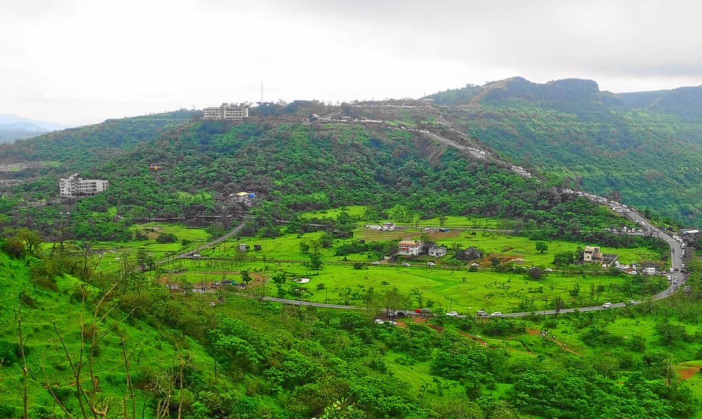
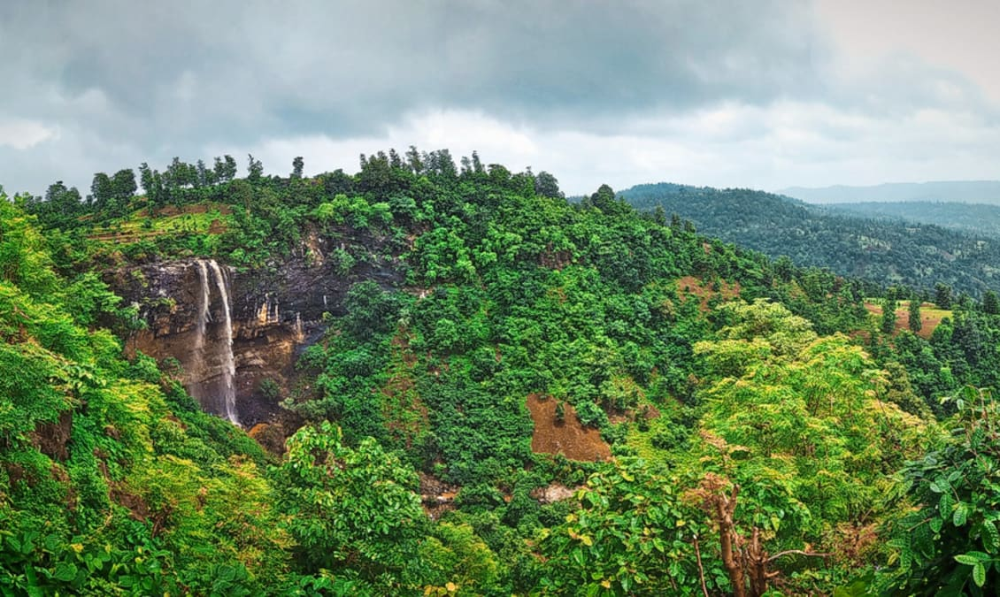
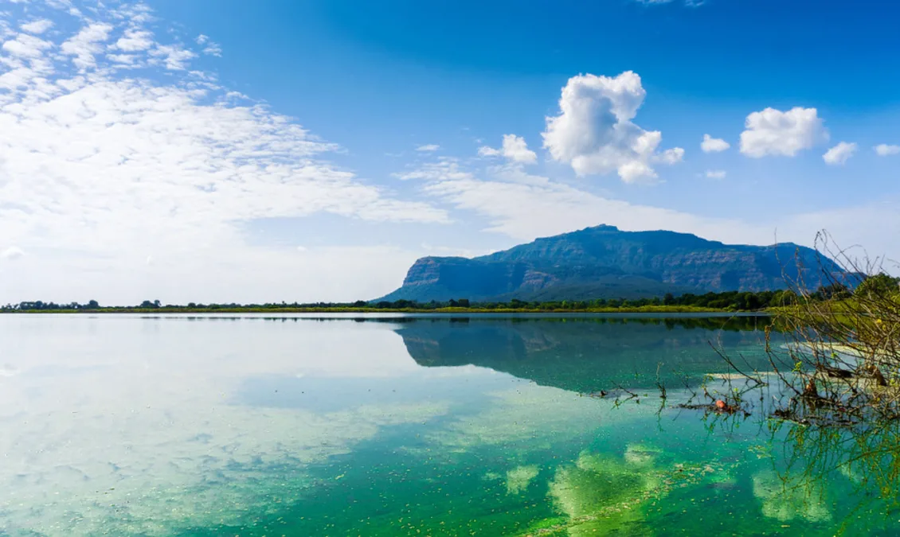

There are numerous picturesque hill stations in Gujarat which are perfect for a short vacation with your friends and family. Gujarat has always been a favourite tourist destination for its unique culture, remnants of ancient civilisation, historical monuments and geographical versatility. Amongst all the natural wonders, the hill stations in Gujarat especially sought after for their beauty and serenity and they make for the perfect getaway for families and couples. These places has its own unique geographical attractions and offer mind-blowing panoramic views of nature, including forests, waterfalls, mountains and lakes. You can also enjoy a multitude of activities in these hill stations including camping, trekking, hiking, jeep safaris, ATV bike rides, rock climbing and much more to satiate your adventurous soul.

SATPURA
is a tourist destination situated in the Dang district of Gujarat. It offers a spectacular view of the Western Ghats residing amid the undulating mountains at a distance of 250 km from Mumbai, and 4 km from the Mumbai border. Being the only hill station in Gujarat, it is located at a height of 1,000 meters and attracts tourists, especially during the summers. Saputara is a benevolent place of artwork by various national and international artists. It displays handicrafts and craftsmanship of various artisans in the area around. There are local traditional stores, and stalls selling Bamboo artifacts that work as thoughtful souvenirs. The Hatgadh Fort is an admirable site of historical significance built by Shivaji during his reign. You can find the statue of Lord Shiva resting on the top of this fort which exudes the aura of sanctity
WILSON HILLS
Located in the Dharampur district, Wilson Hills is a small and yet one of the spectacular Hill Stations in Gujarat. The town has an elevation of 2,500 feet above the sea level and is about 123 km from Surat. This beautiful town offers panoramic views and diverse flora and fauna and you can enjoy the clouds floating in. One can view the sea from the hill top and there’s plenty of spots to harness your photography skills. An added bonus is that the area is surrounded by lush forests and usually has a pleasant climate through the year.


PAVAGADHis one of the smaller hill stations in Gujarat. It ranks in popular Hill Stations near Gujarat. It is situated about 46 km away from Vadodara and has a height of about 822 meters. It is situated on a plateau known as Machi Haveli. The town offers good scenery and is an ideal break for people in Gujarat and bordering states. Legend has that Mahakali took the form of a woman participating in the Navratri garba. So, they have a festival to mark this occasion too.
Best time to visit: The hill station is usually warm in summers but from July onwards till April, it is an ideal break from the Gujarat heat.
MATHERANis a treat for the photographers also to explore and capture the best of the beauty of the beautiful hill station. The beauty of Western Ghats, Matheran is the smallest hill station of India. Travellers and tourists who visit the place love exploring the place by walking on foot. By which it becomes more exciting to get lost in the scenic beauty of the town while finding your way. Plan your trip to Matheran and indulge yourself in various activities that Matheran provides like camping, trekking, rappelling etc.Matheran town is the best option for a person who loves getting lost in the nature and also for those who wants to take a break from their busy city life. The tourist places in Matheran are absolutely breathtaking.